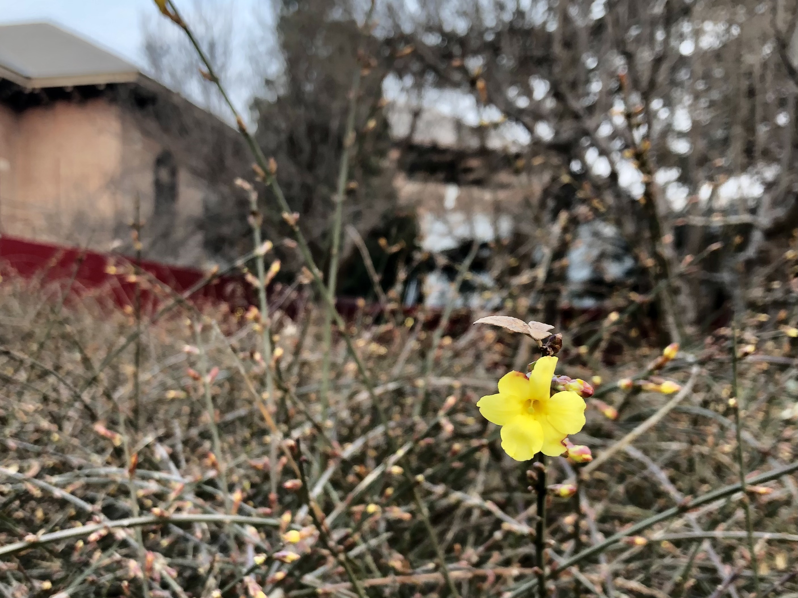
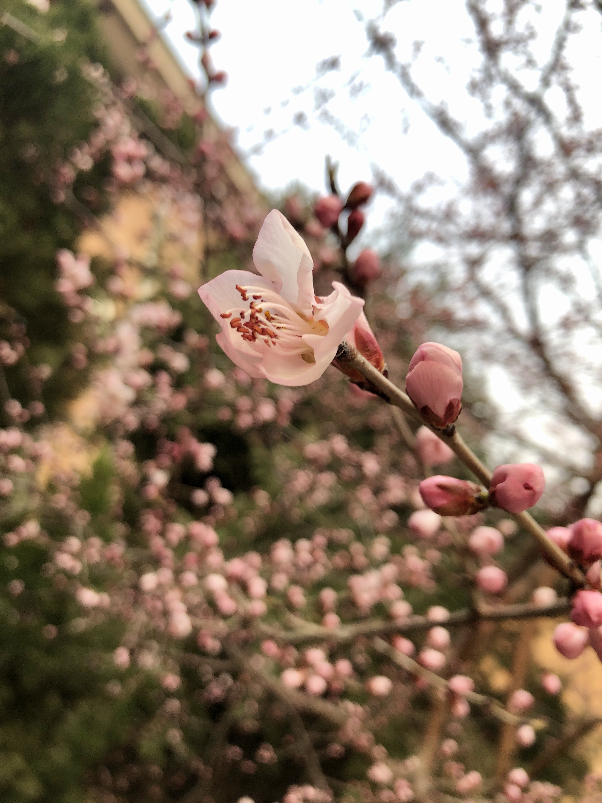

一年后
快一年没有更新blog了。一年来发生了很多，生活和想法也有了若干变化。近来感觉记性越来越不好了，有些未来或许有用但又没什么理由/门类写到OneNote里的东西，似乎还是可以放在这里。
之后或许会多写一些这样的流水账，也会有些可以公开的技术文章，但写长文很累，或许有空会写一篇吧。毕竟上周法语课学了一句谚语，« Petit à petit, l’oiseau fait son nid. »
春天来了，上上周下雪前拍到了第一朵迎春花，今天逸夫馆前的山桃，顶端的枝条也零星开了几多小花。春天真好，每天都觉得充满希望。

